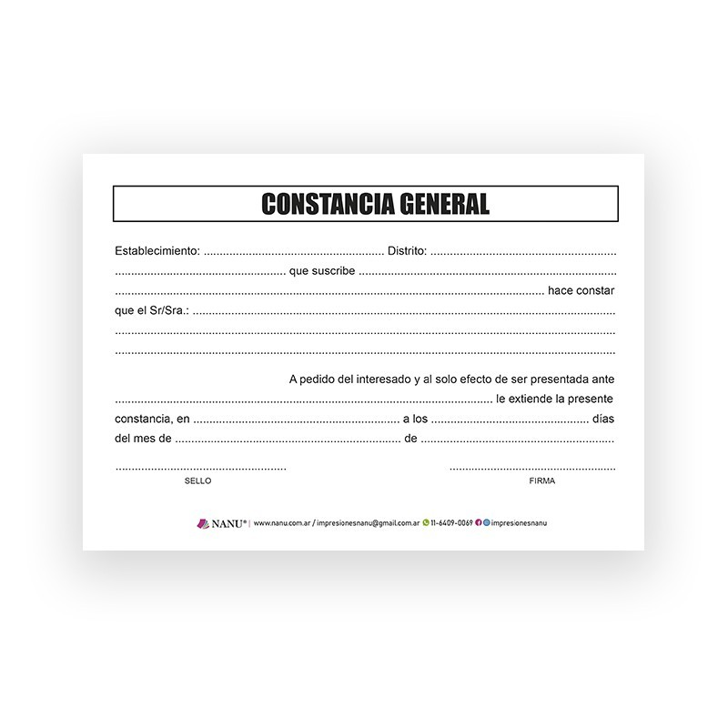
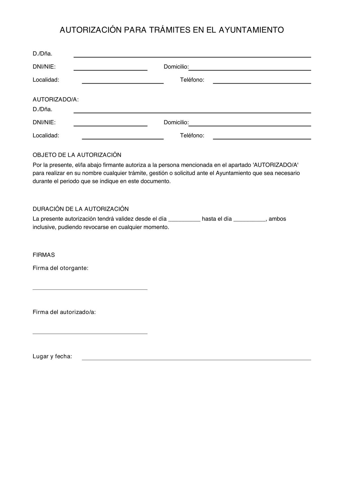
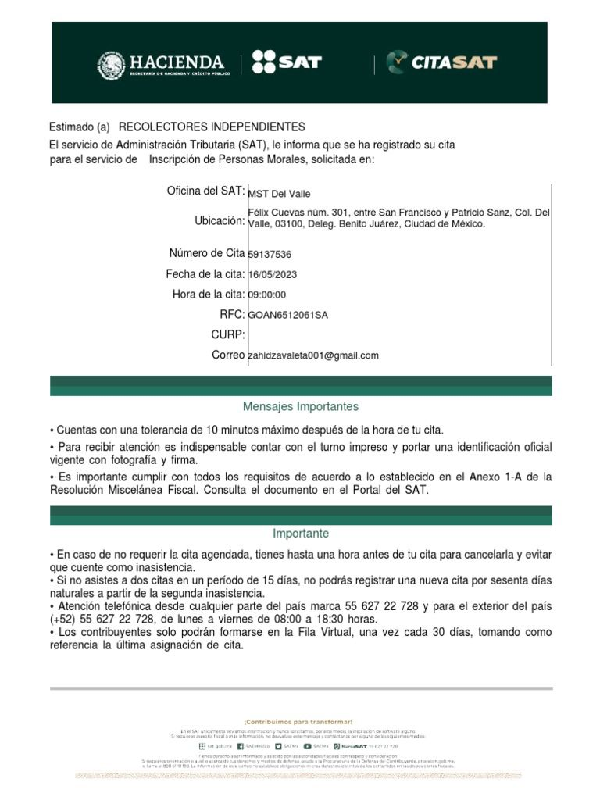

Guía General de Solicitudes
Consulta aquí los requisitos, pasos y documentos necesarios para realizar trámites generales como constancias, certificados, permisos, citas oficiales, comprobantes y más.
Video Explicativo
Solicitud de Constancia General

Requisitos
- Identificación oficial
- CURP
- Comprobante de domicilio
- Formato de solicitud
Pasos
- Acude a la institución correspondiente o realiza el trámite en línea.
- Entrega los documentos o súbelos a la plataforma.
- Llena el formulario de solicitud.
- Espera el tiempo de procesamiento indicado.
- Recoge o descarga tu constancia.
Solicitud de Permiso o Autorización

Requisitos
- Identificación oficial
- Comprobante de pago (si aplica)
- Formato de solicitud
Pasos
- Identifica el tipo de permiso que necesitas.
- Reúne los documentos solicitados.
- Realiza el pago correspondiente (si es requerido).
- Entrega tus documentos o súbelos en la plataforma.
- Espera la resolución o aprobación.
Solicitud de Cita Oficial

Requisitos
- Datos personales
- CURP
- Correo electrónico
Pasos
- Selecciona el tipo de cita que necesitas.
- Llena el formulario con tus datos.
- Selecciona fecha y horario disponible.
- Confirma la cita y guarda tu comprobante.
- Acude el día indicado con los documentos necesarios.